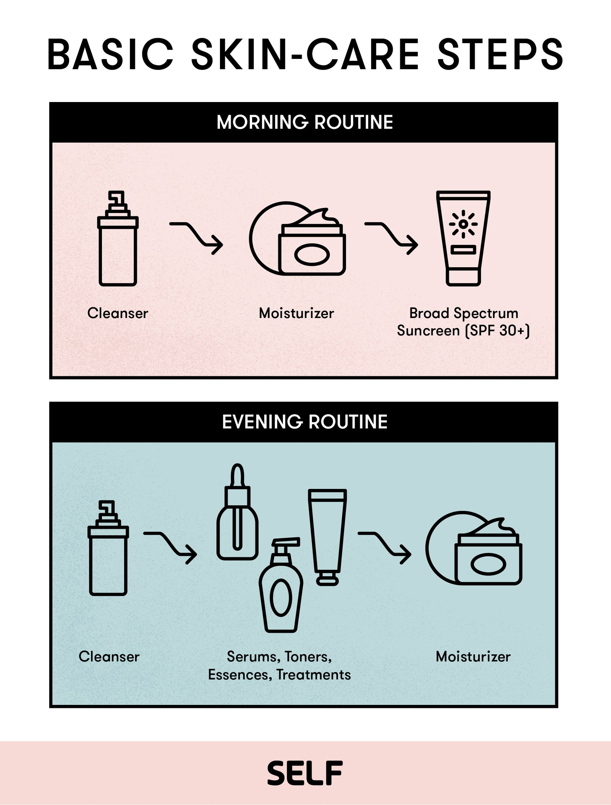

Skin Types
There are four main skin types: normal, dry, oily and combination.
Normal Skin
“Normal” is a term widely used to describe well-balanced skin. This means the overall sebum and moisture is equally distributed and the skin appears clear, without being prone to sensitivity.
Good ingredients:
- Hyaluronic acid
- Niacinamide
- Ceramides
Bad ingredients:
- Perfumes (incl. essential oils)
- “Bad” alcohols
- Mineral oil
Dry Skin
This term refers to a skin type that doesn’t produce enough sebum, thus lacking moisture retaining lipids.
The difference between dry and dehydrated skin is the fact that dehydrated skin is caused by not drinking enough liquids and generally not staying hydrated. Dry skin is caused by the lack of the protective barrier between the skin and the external factors, constituted by the lipids that prevent accelerated Trans Epidermal Water Loss. This is the normal way the skin diffuses water from the deeper layers. A good protective layer prevents this water from being evaporated too quickly.
Good ingredients:
- Humectants (Allantoin, Panthenol, Glycerin)
- Lactic acid
- Natural oils
- + all good ingredients for normal skin
Bad ingredients:
- Strong exfoliating methods
- Salicylic acid (BHA)
- Glycolic acid (AHA)
- Benzoyl Peroxide
- + all bad ingredients for normal skin
Oily Skin
This is the exact opposite of dry skin. More sebum is produced, and is influenced by hormonal, genetic, stress related or external factors.
Pores are large and are prone to getting clogged with sebum and dirt from external factors. This is how blackheads, white heads and acne appear.
Good ingredients:
- Retinoids
- Salicylic acid (BHA)
- Glycolic acid and other AHAs
- Kaolin clay
- + all good ingredients for normal skin
Bad ingredients:
- Occlusives (Petroleum jelly, Paraffin, Lanolin)
- Silicones
- Rich fatty-acid oils (Grapeseed oil is safe to use)
- + all bad ingredients for normal skin
Combination Skin
This is probably the most common skin type, distinguished by an oily T-zone and normal to dry cheeks.
Here you can mix and match good ingredients from the previous categories, depending on your needs and sebum production. Avoid bad ingredients depending on specific zones on your face.

The Steps of a Basic Skincare Routine
A simple skincare routine should not miss:
- Cleansing
- Moisturizing
- Sun protection
Cleansing
Use a cleanser with mild surfactants (avoid Sodium Lauryl Sulfate and Sodium Laureth Sulfate) for your daily use. Cleansing is important because it removes dirt and impurities and preps your skin for the other products in your routine.
Remember to always double cleanse at night! This means removing your makeup, sunscreen and accumulated dirt from your face with an oil base cleanser or micellar water, then following up with a normal cleanser. I don’t recommend makeup wipes, because they are too aggressive to the skin and can cause unwanted exfoliation and even micro-tears.
Moisturizing
No matter your skin type, you should moisturize. A good moisturizer should contain humectants (hyaluronic acid, glycerin, panthenol) that attract water molecules from and around the skin to aid in hydrating it. Emollients such as ceramides are really good to have as well.
If you have oily skin you might want to opt for a lighter moisturizer, maybe even a gel one, while people with dry skin might prefer thicker, more occlusive creams.
Sun Protection
Sunscreen is the main deciding factor in how your skin will age like. Using a good SPF daily guarantees less wrinkles and discoloration along the years, so you can look age-less while all your friends that laughed at you ten years earlier for re-applying sunscreen, now have crow’s feet and saggy skin.
Even better, sunscreen prevents sun damage, which is one of the main causes of skin cancer. Yes, tanning, or even worse, getting a sun burn, radically increases your chances of getting skin cancer. This applies to your body too, not just your face.
You should apply and re-apply fifty SPF sunscreen throughout the day during the sunny seasons, but also use it during winter and autumn, because clouds only block around twenty percent of the UV radiation. In this case, it’s ok to only use thirty SPF.
The earlier you start making a habit out of using sunscreen, the better for your skin. Thank me in a few years, when all your high school friends ask you where you got your filler and botox done!

Depending on your skin type and specific issues you want to target, you can add extra steps to your routine.
Treatment
This includes exfoliating acids (AHAs and BHA), serums, spot treatments or other medicated treatments.
It is advised to get a professional’s opinion before using these kinds of products, as they can damage your skin if used incorrectly or on the wrong skin type. Do a thorough research before adding anything to your routine.
Use these products after cleansing, and before moisturizing. There are some treatments meant to be used after moisturizer, so be careful at the indications.
Toning
Toner is an extra step you can add to your routine. There are hydrating toners, good for virtually all skin types, and exfoliating toners for oily or combination skin. These usually contain exfoliating acids so keep this in mind.
This step should be used before moisturizing.
Face oil
You can add a natural face oil to your routine at night if you want some extra moisturizing. It is important, however, not to use oils at day, because they interact with ingredients in your sunscreen and can highly affect your UV protection.
This should be your last step in your PM routine, after moisturizing. Remember to stay clear of mineral oils!